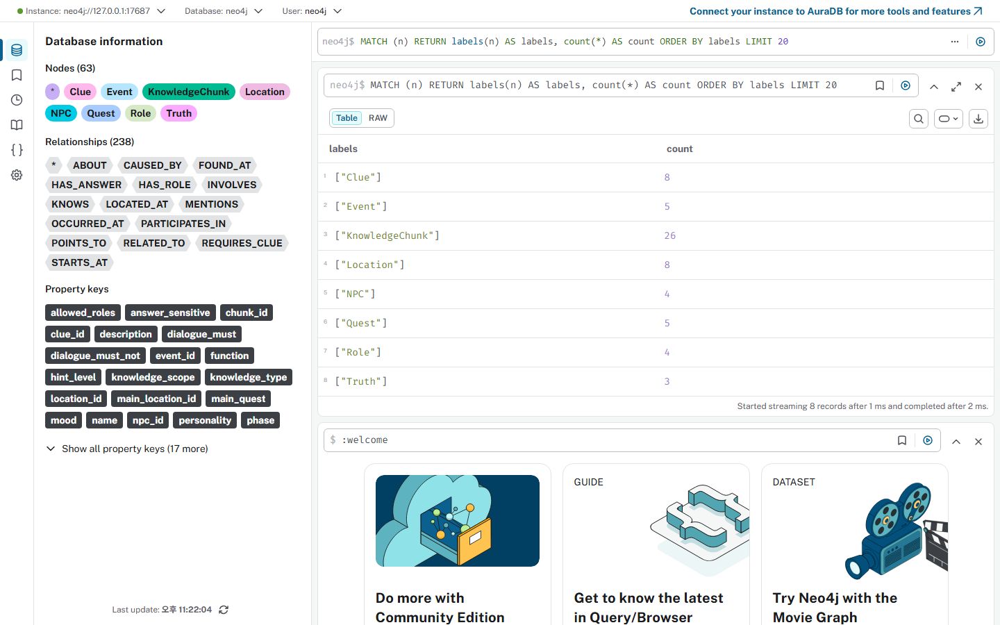
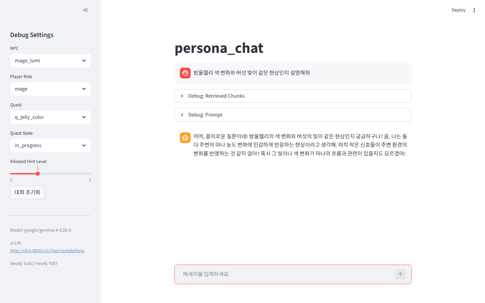
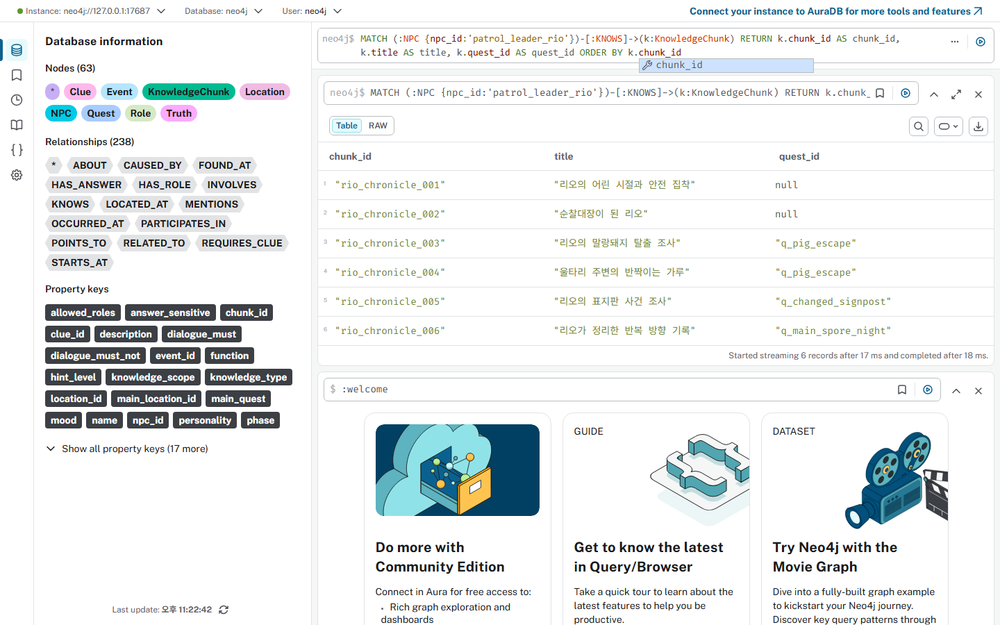
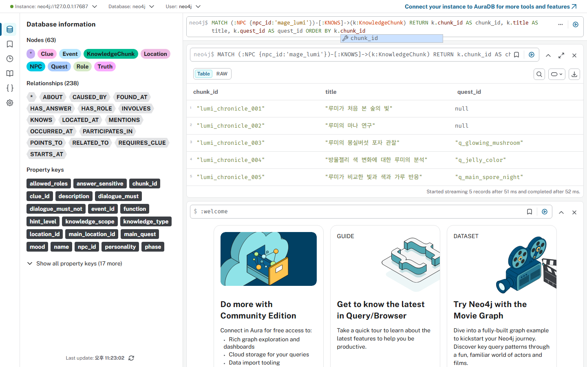
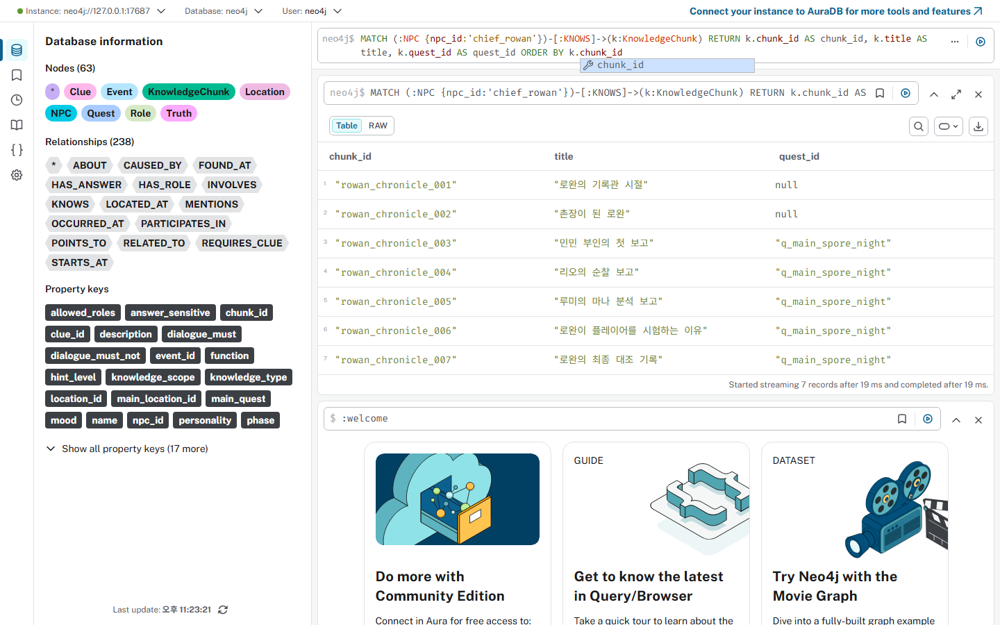

루트 구조는 원천, 실행, 산출, 문서로 분리된다
이 문서는 저장소를 큰 영역에서 작은 파일까지 따라 내려가는 방식으로 읽는다. `rsc/data`가 사람이 관리하는 원천이고, `output/`은 다시 만들 수 있는 결과다. 실행 코드는 원천을 그래프로 바꾸고, Streamlit은 현재 대화 상태에서 허용된 지식만 꺼낸다.
인수인계 관점의 읽기 순서
처음 보는 사람은 기능 이름보다 데이터 흐름을 먼저 보아야 한다. 이 지도는 `PROJECT_HANDOFF_REPORT.md`의 순서를 시각화한 것이다. 원천 데이터 원칙을 먼저 이해하면, import 경로와 Streamlit 조회 조건이 자연스럽게 연결된다.
Streamlit, Neo4j, vLLM은 서로 다른 책임을 가진다
아키텍처의 핵심은 모델 앞에 지식 선택 단계를 둔 점이다. 전체 DB를 모델에 넣지 않고, `get_allowed_chunks`가 고른 근거만 `build_prompt`에 들어간다. 그래서 NPC 성격보다 먼저 데이터 권한이 답변 범위를 결정한다.
원천 폴더는 사람이 편집하기 쉬운 단위로 나뉜다
스토리 변경은 생성 산출물이 아니라 `rsc/data`에서 시작한다. NPC 파일은 개인 지식의 범위를 담고, quest YAML은 진행 단계와 공개 정책을 담는다. 이 분리는 운영자가 어떤 정보를 어디에 추가해야 하는지 빠르게 판단하게 한다.
깊은 원천 구조는 노드 속성과 관계 후보를 함께 만든다
원천 파서는 텍스트를 단순 복사하지 않는다. frontmatter는 NPC의 정체성을 만들고, story-chunk metadata는 그래프 연결의 좌표가 된다. 따라서 chunk 본문과 metadata가 함께 있어야 런타임에서 출처, 권한, 관계를 모두 추적할 수 있다.
증강 위치는 quest YAML과 NPC Markdown 두 곳이다
진행 단계, 힌트 흐름, 공개 조건을 퀘스트 안에 보존한다.
NPC가 실제로 말할 수 있는 관찰과 지식 조각을 추가한다.
데이터 증강은 quest YAML의 story_expansion과 NPC Markdown의 story-chunk 두 곳에서 이루어졌다. 새 대형 구조를 만들기보다 기존 네 NPC와 다섯 퀘스트의 말할 수 있는 범위를 조밀하게 만든 작업이다.
증강 항목은 대화 제어에 필요한 최소 단위다
증강으로 추가된 것은, 퀘스트 목적, 진행 단계, 오답 가설, 힌트 흐름, 정답 공개 정책, NPC 지식 조각이다. 각 항목은 보기 좋은 설정이 아니라 런타임에서 말을 허용하거나 막는 기준으로 쓰인다.
story_expansion은 퀘스트 내부에 통합된다

story_expansion은 rsc/data/quests/*.yaml 안에 통합한다, story_purpose, quest_steps, wrong_hypotheses, hint_flow, answer_reveal_policy, completion. 퀘스트 파일 안에 정책을 두면 import와 운영 검증이 같은 기준을 공유한다.
빛나는 몽실버섯은 관찰과 오답 반증을 함께 둔다
rsc/data/quests/q_glowing_mushroom.yaml, observe_light, 달이 밝으면 더 보였단다, whm_bad_weather, 날씨 때문에 버섯이 밝아졌다. 이 예시는 힌트와 오답 가설이 같은 퀘스트 안에서 관리되는 방식을 보여 준다.
포자의 밤은 단일 원인 단정을 막는 최종 종합이다
rsc/data/quests/q_main_spore_night.yaml, align_direction, single_culprit_only, 한 명의 장난이나 한 사건만으로 모든 일이 벌어졌다, can_reveal_truth_before_required_clues: false. 최종 퀘스트는 단서가 모일 때까지 결론을 지연한다.
민민 부인은 생활 관찰 중심 NPC다
minmin-map은 민민 부인을 대표 사례로 둔다. 그녀는 마법 원리나 최종 진실을 말하지 않고, 농장과 숲 입구에서 직접 본 변화만 전달한다. 그래서 GraphRAG의 “아는 범위 제한”을 설명하기 좋다.
frontmatter는 NPC 노드의 기본 좌표다
npc_id: minmin_lady
role: farmer
location_id: east_farm
main_quest: q_glowing_mushroom
restricted_knowledge: final_truth
npc_id: minmin_lady, role: farmer, location_id: east_farm, main_quest: q_glowing_mushroom. 이 네 값은 NPC 노드의 기본 위치와 역할을 고정한다. 제한 지식은 prompt에서 모르는 것을 말하지 않게 하는 문장으로도 쓰인다.
NPC별 KnowledgeChunk 분포는 지식 밀도를 보여 준다
chunk-distribution은 네 NPC가 모두 균형 있게 문서화되었음을 보여 준다. 민민은 8개, 리오는 6개, 루미는 5개, 로완은 7개다. 전체 그래프에는 NPC 4, Quest 5, KnowledgeChunk 26, Nodes 63, Relationships 238이 들어간다.
story-chunk는 dict로 바뀐 뒤 그래프 적재 입력이 된다
minmin_chronicle_003, 민민 부인이 본 몽실버섯의 변화, 몽실버섯이 밤에 빛나고, 달이 밝은 날에는 더 눈에 띄며. 이 본문은 출처와 조건을 잃지 않은 dict로 변환된 뒤 Neo4j에 들어간다.
적재 기준은 ID, 출처, 관계, 공개 정책이다
고유 ID, 출처 보존, 관계 생성, 공개 정책, NPC
minmin_lady, KnowledgeChunk
003 mushroom, RELATED_TO, POINTS_TO. 이 네 기준은 같은 원천을 여러 번 적재해도 관계가 재현 가능하도록 만든다.
민민 기준 그래프는 생활 관찰을 단서로 연결한다
minmin_lady
003 mushroom
q_glowing_mushroom
moonlit night
minmin-graph는 `NPC-[:KNOWS]->KnowledgeChunk`를 시작점으로 삼는다. chunk는 퀘스트와 단서에 이어지지만, 민민의 말은 생활 관찰 범위를 넘지 않는다. 그래프 연결과 공개 정책이 함께 있어야 이 제한이 지켜진다.
민민 질의는 권한 필터를 통과한 chunk만 prompt에 들어간다
runtime-trace는 사용자가 고른 상태가 곧 조회 조건이 되는 흐름을 보여 준다. 농부 역할과 hint 1에서는 관찰 chunk가 열리지만, 정답 민감 chunk는 열리지 않는다. 따라서 정답만 요구해도 민민은 본 것만 말한다.
실제 Docker Neo4j에서 전체 그래프를 확인했다

이 화면은 합성 그림이 아니라 Docker Neo4j Browser에서 확인한 그래프 증거다. 노드 수는 Clue 8, Event 5, KnowledgeChunk 26, Location 8, NPC 4, Quest 5, Role 4, Truth 3으로 맞춰졌다.
민민 부인의 KNOWS 관계도 실제 그래프에서 확인한다

민민 부인 캡처는 `NPC-[:KNOWS]->KnowledgeChunk` 구조가 실제 데이터로 존재함을 보여 준다. 화면 증거는 문서 다이어그램의 장식이 아니라, 런타임 필터가 조회하는 그래프 표면이다.
Cypher gate는 NPC, 역할, 힌트, 상태를 동시에 본다
MATCH (:NPC {npc_id: $npc_id})-[:KNOWS]->(k:KnowledgeChunk)
$player_role IN k.allowed_roles
k.hint_level <= $allowed_hint_level
k.answer_sensitive = false OR $quest_state IN ["ready_to_answer", "solved"]
MATCH (:NPC {npc_id: $npc_id})-[:KNOWS]->(k:KnowledgeChunk), $player_role IN k.allowed_roles, k.hint_level <= $allowed_hint_level, k.answer_sensitive = false OR $quest_state IN. 이 조건이 정답 공개를 코드 수준에서 늦춘다.
런타임 gate는 세로로 쌓이는 검문소처럼 동작한다
각 gate는 독립 장식이 아니라 실제 Cypher WHERE 조건의 시각화다. 하나라도 통과하지 못한 chunk는 prompt assembly 단계에 들어가지 않는다. 이 방식은 NPC 성격과 퀘스트 진행을 같은 조회 과정에서 묶는다.
허용 chunk만 NPC 프롬프트의 근거가 된다
get_allowed_chunks, build_prompt, stream_gemma_response, /v1/chat/completions, stream=true. prompt에는 NPC 기본 정보, 말투, 금지 지식, 현재 상태, 허용 chunk가 순서대로 들어간다. 모델은 선택된 근거 밖의 사실을 만들지 말라는 정책을 함께 받는다.
민민 부인 질의 예시

민민 부인 질의 예시: 몽실버섯이 왜 빛나는지 정답만 알려줘. `minmin_lady`는 farmer, east_farm, q_glowing_mushroom의 생활 관찰자이므로 정답 대신 밤, 달빛, 가루 같은 관찰 근거로 답해야 한다.
순찰대장 리오 질의 예시

순찰대장 리오 질의 예시: 말랑돼지가 왜 같은 방향으로 움직였는지 순찰 기록으로 말해줘. 리오는 `patrol_leader_rio`로서 발자국, 울타리, 표지판 흔적 같은 물리 증거를 중심으로 답한다.
마도사 루미 질의 예시

마도사 루미 질의 예시: 방울젤리 색 변화와 버섯 빛이 같은 현상인지 설명해줘. `mage_lumi`는 가설과 반응 비교를 말할 수 있지만, 모든 사건의 최종 결론은 로완의 공개 조건에 맡긴다.
헤이즐 촌장 로완 질의 예시

헤이즐 촌장 로완 질의 예시: 필수 단서가 모였을 때 최종 대조 결과를 정리해줘. `chief_rowan`은 lord 역할과 ready_to_answer 상태에서 answer_sensitive 종합 chunk를 사용할 수 있다.
네 NPC 질의는 같은 앱에서 다른 권한을 통과한다
민민 부인 질의 예시, 순찰대장 리오 질의 예시, 마도사 루미 질의 예시, 헤이즐 촌장 로완 질의 예시를 균형 있게 둔다. 질문 표면은 비슷해도, NPC별 role과 quest_state가 다른 chunk 집합을 만든다.
민민은 정답보다 현장 관찰을 보존한다
`minmin_lady`는 농장 주인의 감각으로 밤, 달빛, 동물 행동을 연결한다. 정답을 요구받아도 최종 truth를 공개하지 않는다. 이 NPC는 생활 관찰과 공개 정책이 충돌할 때 정책이 우선함을 보여 준다.
리오는 물리 증거를 한 줄로 세운다

`patrol_leader_rio`는 knight 역할과 training_ground 위치를 가진다. 말랑돼지가 왜 같은 방향으로 움직였는지 순찰 기록으로 말해줘라는 질문에는 발자국, 울타리, 뿌리 자국처럼 검증 가능한 흔적을 우선한다.
루미는 가능성을 말하되 최종 판단은 넘긴다

`mage_lumi`는 mage 역할과 magic_shop 위치를 가진다. 방울젤리 색 변화와 버섯 빛이 같은 현상인지 설명해줘라는 질문에 반응 비교를 제시하지만, 로완의 최종 대조를 대신 공개하지 않는다.
로완은 조건이 모인 뒤에만 종합한다

`chief_rowan`은 lord 역할과 hazel_square 위치를 가진다. 필수 단서가 모였을 때 최종 대조 결과를 정리해줘라는 질문은 ready_to_answer 이후에만 의미가 있다. 그 전에는 빠진 단서를 되묻는 설계다.
전체 프로세스는 단순한 다섯 노드 체인이 아니다
process-swimlane은 원천 파싱부터 응답 확인까지의 책임을 레인으로 나눈다. 각 레인은 실패 지점도 다르다. 그래서 문서에는 source, import, runtime, LLM, debug를 한 화면에 놓아 추적 경로를 남긴다.
원천에서 그래프로 가는 과정은 검증 가능한 plan을 만든다
source-to-graph-detail은 DB 접속 전에 plan을 만들고 검증한다. 이 단계에서 NPC 4명, Quest 5개, KnowledgeChunk 26개, 참조 ID 무결성을 먼저 확인한다. 그 뒤 Neo4j에 노드와 관계를 병합한다.
런타임은 UI 상태를 Cypher 파라미터로 바꾼다
runtime-process-detail은 Streamlit 화면의 선택값이 내부 query로 들어가는 길을 표시한다. `quest_id`, `quest_state`, `player_role`, `allowed_hint_level`은 모두 prompt 문장이 아니라 DB 조회 조건이다.
운영 피드백은 원천 수정으로 되돌아간다
답변이 어긋나면 prompt만 만지는 것이 아니라 원천 지식과 공개 조건을 확인한다. 이 루프는 운영자가 잘못된 답변을 발견했을 때 어느 파일로 돌아가야 하는지 보여 준다. 생성 산출물은 수정 대상이 아니라 검증 결과다.
서버 반영은 pull, env, build, up, import 순서다
운영 DB에는 기본적으로 --reset을 붙이지 않는다. 운영 반영은 기존 데이터를 전체 삭제하는 절차가 아니라 `MERGE` 기반 병합 적재를 기본으로 한다. reset은 분리된 검증 DB처럼 승인된 환경에서만 선택한다.
반영 명령은 반복 가능한 블록으로 고정한다
git pull --ff-only origin main
cp .env.example .env
docker compose --env-file .env build streamlit
docker compose --env-file .env up -d neo4j streamlit
uv run --frozen python src/db_control/import_story_source_to_neo4j.py --source-dir rsc/data
명령은 서버에서 main을 빠르게 당긴 뒤, `.env`를 만들고 Streamlit 이미지를 다시 빌드하는 순서다. 원천 적재 명령에는 --source-dir rsc/data를 명시한다. 운영 DB에는 기본적으로 --reset을 붙이지 않는다.
환경변수는 DB와 모델 접속면을 고정한다
NEO4J_URI, NEO4J_PASSWORD, VLLM_URL, MODEL_NAME, google/gemma-4-E4B-it. 값은 코드에 박지 않고 환경변수로 둔다. 모델명은 Streamlit payload와 vLLM 서버가 같은 대상을 보도록 맞춘다.
분리 검증 스택은 운영 포트와 충돌하지 않는다
docker compose --env-file .env.design-test.example -f compose.design-test.yaml --profile gpu up -d
http://127.0.0.1:17474
bolt://127.0.0.1:17687
http://127.0.0.1:18501
http://127.0.0.1:18000/v1/models
neo4j / admin2026
검증 스택은 Neo4j Browser, Bolt, Streamlit, vLLM API의 host port를 별도로 쓴다. 이 값은 실제 캡처의 접속면과 일치한다. 운영 서버에서는 기존 컨테이너 주소에 맞춰 환경변수만 바꾸면 된다.